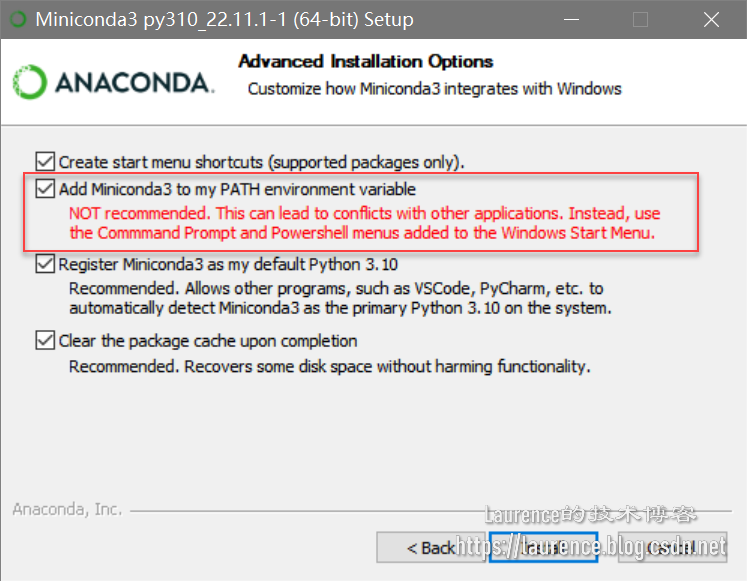

安装Anaconda时是否需要将其添加到PATH环境变量中
这不是个大问题，但搞清楚还是很有必要的。安装 Anaconda / Miniconda时，安装向导中会有这样一个选项：

如果勾选，会给出红色提示，说有可能影响与其他应用程序冲突。经过测试发现，冲突主要来自于系统中安装的其他版本的Python。因为安装Anaconda / Miniconda并不需要Python，它自带一个版本的Python，该Python安装在Anaconda / Miniconda的安装目录下，即: Anaconda / Miniconda的 根目录 （例如下面示例中的C:\Lib\miniconda3）同时也是一个标准的Python根目录，在其下面会有python.exe，还有Scripts，Lib等所有Python的子目录。属于Anaconda / Miniconda自身的目录有：condabin，envs等。我们来看一下点选“Add Miniconda3 to my PATH environment variable”完成安装后的PATH环境变量：
试读结束

安装Anaconda时是否需要将其添加到PATH环境变量中
https://laurence.enlightgram.com/python/anaconda-path-environment/